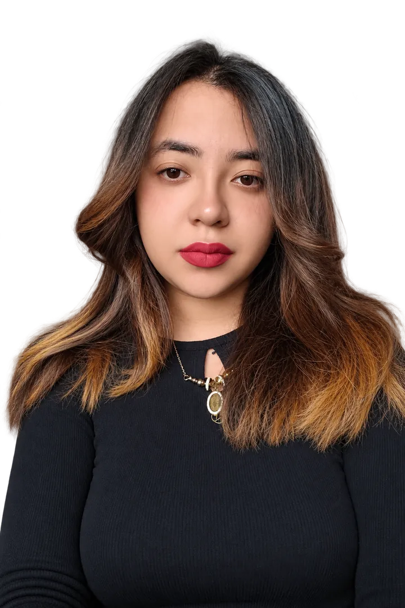

Estrategia
- Marketing digital y 360°
- Posicionamiento y branding
- Planeación editorial
Hola, soy
Marketing y comunicaciones
Estrategia digital
Diseño y ejecuto estrategias de marketing digital que conectan las marcas con las personas y con sus objetivos comerciales.

Soy Comunicadora Social con énfasis en Marketing Digital y experiencia en marketing, comunicaciones y posicionamiento de marca. He sido coordinadora de marketing y ventas, coordinadora de mercadeo, community manager y coordinadora de contenidos.
Diseño y ejecuto estrategias de marketing digital, campañas de pauta, generación de leads, gestión de contenidos y redes sociales, CRM, email marketing y desarrollo de sitios web. Mi trabajo articula los objetivos de comunicación con las necesidades comerciales de cada organización.
Lo traduzco a contenidos, artículos y piezas que una audiencia general puede seguir.
Ordeno objetivos, parrilla, formatos, pauta y seguimiento.
Desarrollo concepto, identidad visual y narrativa de marca.
Entiendo la marca, la audiencia y los objetivos comerciales.
Defino estrategia, concepto, canales y parrilla.
Redacto, diseño y edito las piezas.
Publico, pauto, analizo y ajusto.
Cada ciclo empieza otra vez con lo aprendido en la medición.
Cuatro casos contados completos: contexto, mi rol, enfoque, evidencias y resultados. Cada uno indica su estado.
 IFCAYA
IFCAYA
Sitio web desde cero, piezas para redes, reels, documentos y pauta para una firma de ingeniería forestal y ambiental.
 C-Neutral
C-Neutral
Contenidos, reels, cubrimiento de eventos e informes para una marca de neutralidad de carbono: +80 % en seguidores y +90 % en alcance.
Marca de contenido narrada en primera persona por una gata tuxedo: identidad, guion, grabación y edición de videos.
Creación completa de una marca de miel, marañón y vinos: manual de marca, sistema de logotipos y etiquetas.
Conectar contenidos, sitio web y pauta para que una firma de ingeniería forestal explique lo que hace y reciba contactos.
IFCAYA es una empresa colombiana de ingeniería forestal y consultoría ambiental con trayectoria desde 1970. Trabaja en restauración ecológica, compensación, gestión ambiental y proyectos de captura de carbono, con clientes del sector público y privado.
El objetivo era fortalecer su posicionamiento digital y comercial. El conocimiento técnico existía, pero había que convertirlo en contenidos que entendieran los clientes potenciales y que llevaran a una conversación comercial.
Cada pieza tenía un lugar en el recorrido: atraer en redes, profundizar en el blog y convertir en el sitio.
Resultados reportados en mi hoja de vida, sin cifras. Agregar cifras solo si hay fuente
Piezas desarrolladas para IFCAYA durante mi gestión. Toca una imagen para verla en grande; los videos se reproducen aquí mismo.
Video con vocera del equipo técnico sobre la miel producida dentro de plantaciones forestales en Vichada. Subtítulos dinámicos y tomas de apoyo.
Contenido educativo: beneficios de las especies nativas, con mosaico de fotografías de campo.
Infografía en seis pasos que explica qué debe incluir el estudio, con fotografías e íconos por etapa.
Cubrimiento de la participación de IFCAYA en la COP16, con el tema del día y llamado a contacto.
Video educativo con vocera del área de investigación: qué es el biochar y cómo mejora los suelos y ayuda a mitigar el cambio climático.
Portada del documento técnico del PEMF para 12,5 hectáreas de especies nativas en Canapro, Vichada (agosto de 2025).
Pieza con registro de una jornada de siembra comunitaria y mensaje de marca.
Invitación a la reunión de socialización con autoridades y comunidades (febrero de 2025).
Reel de efeméride del 5 de junio, con texto animado sobre imágenes de naturaleza.
Primera lámina de un carrusel sobre el seguimiento a proyectos de conservación y reforestación.
Fotografía de fauna usada como recurso visual para los contenidos de la marca.
Pendiente: capturas del sitio web, una newsletter y un anuncio
Textos que redacté para el blog del sitio web de IFCAYA, organizados por tema. Los enlaces abren la versión publicada.
Diferencias entre ambos enfoques y cuándo conviene cada uno.
Causas de la degradación y técnicas para recuperar el suelo.
Cuándo es válida en reforestación productiva y por qué se cuestiona en restauración ecológica.
Metodologías y herramientas para verificar que un proyecto cumple sus objetivos.
Prácticas para aprovechar el bosque sin comprometer su regeneración.
Corta selectiva y otras técnicas dentro del marco legal colombiano.
Qué es la producción sostenible y qué beneficios trae al territorio.
Beneficios ambientales y sociales: carbono, biodiversidad y desarrollo rural.
El modelo agroforestal de IFCAYA en Puerto Carreño.
Cómo el análisis del territorio define qué se puede hacer en cada zona.
El estudio biótico que exigen los proyectos de energía para su licencia ambiental.
Su papel como polinizadoras en la biodiversidad y la seguridad alimentaria.
La relación entre equidad social y sostenibilidad, a propósito del 20 de febrero.
El liderazgo femenino en la ciencia ambiental, a propósito del 11 de febrero.
Qué implica y qué beneficios trae a empresas y territorios.
Qué hace un ingeniero ambiental y por qué es clave.
Diferencias de enfoque y cómo colaboran ambas disciplinas.
Tiempo de lectura estimado a 200 palabras por minuto.
Hacer cercana y comprensible la neutralidad de carbono en los canales de una marca de sostenibilidad.
C-Neutral es una marca vinculada a la sostenibilidad y la neutralidad de carbono. Comunicar este tema exige precisión técnica, porque hablar de huella, reducción y compensación tiene matices, y al mismo tiempo cercanía, para que una audiencia general quiera seguir la conversación.
Cifras reportadas sobre la cuenta de la marca. También reporté crecimiento en leads de calidad, sin cifra. Agregar captura de estadísticas como evidencia
Piezas desarrolladas para C-Neutral: videos, cubrimiento de eventos, contenido educativo e informes para clientes. Toca una imagen para verla en grande.
Entregable animado para el cliente: árboles sembrados, especies nativas y ubicación del bosque en la Reserva del Sisga, Cundinamarca.
Anuncio de la participación de la empresa en la COP16, con sus voceros.
Pieza comercial que explica cómo las empresas pueden compensar hasta el 50 % de sus emisiones gravadas con el impuesto al carbono.
Video con el CEO de la empresa invitando a un webinar con un invitado externo, con fecha y subtítulos.
Mensaje de marca durante la COP16 sobre la relación entre biodiversidad, agua y alimentos.
Anuncio de la participación en el XIV Congreso Internacional de Ingeniería y Mantenimiento Naval, 12 y 13 de septiembre de 2024.
Video horizontal del congreso con testimonios de la Armada y del CEO sobre la gestión sostenible del evento.
Historia sobre el reencuentro con aliados durante la COP16.
Contenido de actualidad sobre el acuerdo de la COP29 para un mercado mundial de certificados de carbono.
Reel educativo sobre el Decreto 926 de 2017, los certificados de carbono y la reducción de costos para las empresas.
Resumen del primer día de participación en el foro, con fotos del evento.
Explicación del mecanismo reglamentado por el Decreto 926 de 2017.
Historia del cuarto día de la COP16 sobre las iniciativas de las comunidades del Pacífico.
Cubrimiento de la apertura de la Zona Verde de la COP16.
Video de cubrimiento del proyecto en una institución educativa, con vocera, trabajos de estudiantes y entrega de certificado.
Pieza de marca con llamado a contacto.
Entregable animado para el cliente con árboles sembrados por año, especies y ubicación del bosque.
Pieza sobre la medición y compensación de la huella de carbono del congreso: medimos, reducimos, compensamos y transformamos.
Historias desde la Casa Británica sobre prácticas regenerativas en agricultura, turismo y economía.
Banner horizontal para el congreso con el mensaje de medición de huella.
Pendiente: captura de estadísticas de la cuenta con el periodo visible
Un personaje con voz propia: una gata tuxedo de pelo largo que cuenta su vida en primera persona.
Nami no es la mascota de una cuenta. Es la narradora.
El proyecto construye una marca alrededor de Nami, una gata tuxedo de pelo largo. Todo el contenido se cuenta desde su voz, en primera persona, lo que da una personalidad constante a cada video aunque cambie el formato o la plataforma. El blanco y negro de su pelaje es también la base de la identidad visual.
Exploración de logotipo en tres estilos, cada uno pensado para un uso: redes sociales, YouTube y branding, y un tono tierno para conectar con todas las edades.
Estilo TikTok, premium y kawaii, con los criterios de uso de cada uno.
Fondo oscuro con brillos y burbuja de corazón.
Retrato con marco dorado y tipografía serif.
Patitas, corazones y borde punteado rosa.
Historias narradas por Nami en primera persona, con subtítulos dinámicos palabra por palabra y el logo como sello en cada pieza.
Nami se presenta y cuenta cómo llegó a su familia.
El proceso de adopción contado desde su mirada, con tomas en casa y en la calle.
Pieza corta y emotiva en formato de diálogo entre Nami y su dueña.
Nami muestra sus costumbres y travesuras por la casa.
Una marca creada desde cero que lleva el río Bita, su biodiversidad y su ancestralidad a una línea de productos del Vichada.
RioBita toma su nombre del río Bita, afluente del Orinoco que recorre el Vichada hasta Puerto Carreño. Su cuenca fue declarada humedal Ramsar en 2018, el sitio Ramsar más grande de Colombia. La marca se inspira en ese río, en la biodiversidad de su cuenca y en la ancestralidad del territorio.
Hice toda la creación de la marca, desde el concepto hasta el manual y las etiquetas. Su promesa es «Origen que se saborea»: productos naturales con identidad territorial, elaborados con prácticas sostenibles que apoyan a las comunidades locales. La línea incluye:
| Pieza | Estado |
|---|---|
| Manual de marca | Creado |
| Sistema de logotipos | Creado |
| Etiqueta de miel de abejas | Cinco opciones de formato · indicar si alguna se aprobó o imprimió |
| Etiqueta de cuñete de miel (27 kg) | Propuesta o implementada |
| Etiquetas de vino de miel y de marañón | Propuesta o implementada |
| Etiqueta de mantequilla de marañón | Propuesta o implementada |
| Empaques y aplicaciones digitales del manual | Prototipos de visualización |
#D68F2BDulzura y sol#3B5E44Vegetación viva#4EB9AEClaridad del río#A15134Suelo de sabana#7E5C3CSemilla tostada#6C2F32Elegante y frutal#C7A763Sol sobre la vegetación#A5A5A5Neutral y sobrio#3A2C25Contraste oscuroCuatro versiones para cada uso y tres versiones monocromáticas aprobadas en el manual.
Versión principal a color, para etiquetas y piezas institucionales.
Solo el nombre, con la gota de miel y el marañón. Para redes y piezas digitales.
El paisaje sin texto, para tapas, íconos y empaques pequeños.
Versión circular que funciona como sello de autenticidad.
Versión monocromática para uso institucional o ecológico.
Versión monocromática para la línea de miel.
Versión neutra para alto contraste.
Las 14 páginas del manual. Desliza para recorrerlo y toca una página para verla en grande. Los empaques y fotografías de producto que aparecen son prototipos de visualización, como lo indica el propio manual.
Artes de etiqueta para cada línea. La miel se trabajó en cinco opciones de formato.
Etiqueta troquelada con el arco del isotipo y su collarín.
Formato envolvente con información legal y de origen.
Versión reducida para frascos de menor capacidad.
Frente y reverso en formato vertical.
Pensada para vinilo transparente sobre el frasco.
Etiqueta para presentación a granel.
Fermentado artesanal de miel multifloral y marañón.
Historia, ingredientes, datos legales y lote.
Misma familia gráfica con su propia denominación.
Información del producto y del productor.
Ilustración del fruto como protagonista.
Texto de marca, usos sugeridos y datos legales.
Pieza de cuello con el isotipo.
Resultados reportados en mi hoja de vida.
Logros y cifras reportados en mi hoja de vida.
Centro Comercial MiCentro El Porvenir
IFCAYA
C-Neutral
Agrocampo S.A.S.
Hacienda El Cucharo S.A.S.
Dávila Peña y CIA LTDA. · Travelers Apartamentos y Suites
PubliciTV
SCN S.A.S.
UNIMINUTO
Corporación Universitaria Minuto de Dios – UNIMINUTO
UCompensar · Certificado
Politécnico de Colombia
Educación Futuro · 40 horas
Platzi
UNIMINUTO
Consulta la hoja de vida completa en PDF.
Descargar hoja de vidaEscríbeme para hablar de estrategia digital, contenidos, pauta, sitios web o creación de marca.